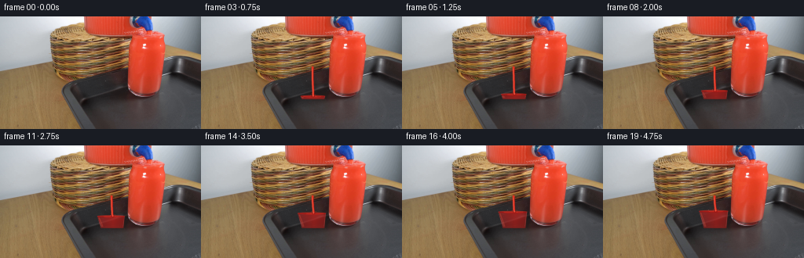
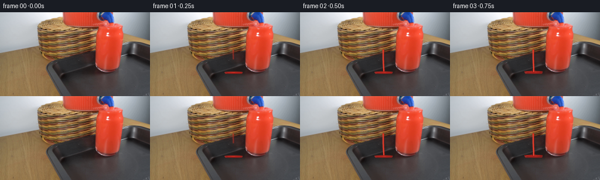

CODING AGENTS AS PIXEL WORLD MODELS
traex/GPT-5.6-Sol · 0088
点击播放 · 原生 RGB 像素
逐轮保存的候选
回放视频、检查图与代码变化。
每份候选均可单独播放。实际图片检查记录在下方工具轨迹中。
候选 01播放与检查图
点击播放 · 原生 RGB 像素


展开代码变化
--- 上一保存版本
+++ 本次保存版本
@@ -0,0 +1,163 @@
+from pathlib import Path
+import cv2
+import numpy as np
+from PIL import Image
+import artifact_io
+
+# PixelWorld case 0088: analytic, locked-camera liquid animation.
+CASE_DIR = Path(__file__).resolve().parent
+SOURCE = np.asarray(Image.open(CASE_DIR / "first_frame.png").convert("RGB"), dtype=np.uint8)
+H, W = SOURCE.shape[:2]
+SS = 4
+
+
+def smoothstep(a, b, x):
+ if b <= a:
+ return float(x >= b)
+ q = np.clip((x-a)/(b-a), 0.0, 1.0)
+ return float(q*q*(3.0-2.0*q))
+
+
+def hi_mask(draw_fn, blur=0.0):
+ """Return a supersampled antialiased coverage mask."""
+ m = np.zeros((H*SS, W*SS), np.uint8)
+ draw_fn(m)
+ if blur:
+ sigma = blur*SS
+ m = cv2.GaussianBlur(m, (0, 0), sigmaX=sigma, sigmaY=sigma)
+ return cv2.resize(m, (W, H), interpolation=cv2.INTER_AREA).astype(np.float32)/255.0
+
+
+def poly_mask(points, blur=0.0):
+ pts = np.round(np.asarray(points, np.float32)*SS).astype(np.int32)
+ return hi_mask(lambda m: cv2.fillPoly(m, [pts], 255, lineType=cv2.LINE_AA), blur)
+
+
+def ellipse_mask(box, blur=0.0, thickness=-1):
+ x0,y0,x1,y1 = box
+ center=(round((x0+x1)*SS/2), round((y0+y1)*SS/2))
+ axes=(max(1,round((x1-x0)*SS/2)), max(1,round((y1-y0)*SS/2)))
+ thick = thickness if thickness < 0 else max(1, round(thickness*SS))
+ return hi_mask(lambda m: cv2.ellipse(m, center, axes, 0, 0, 360, 255, thick, cv2.LINE_AA), blur)
+
+
+def line_mask(points, thickness, blur=0.0):
+ pts=np.round(np.asarray(points,np.float32)*SS).astype(np.int32)
+ return hi_mask(lambda m: cv2.polylines(m,[pts],False,255,max(1,round(thickness*SS)),cv2.LINE_AA),blur)
+
+
+def composite(frame, color, alpha):
+ a=np.clip(alpha,0,1)[...,None].astype(np.float32)
+ c=np.asarray(color,np.float32)
+ if c.ndim == 1:
+ c=c.reshape(1,1,3)
+ return frame*(1-a)+c*a
+
+
+def glass_bounds(y):
+ # Interior perspective of the tumbler underneath the dispenser tap.
+ f=np.clip((y-76.0)/30.0,0,1)
+ return 120.5+7.5*f, 159.5-2.0*f
+
+
+def make_frame(index):
+ if index == 0:
+ return SOURCE.copy() # required pixel-identical first frame
+
+ frame=SOURCE.astype(np.float32)
+ t=index/19.0
+ # The stream starts immediately after the untouched establishing frame.
+ start=smoothstep(0.015,0.12,t)
+ fill_progress=smoothstep(0.07,0.98,t)
+ # A glass fills faster at the bottom, then its widening cross-section slows the rise.
+ level=103.0-19.0*(fill_progress**0.78)
+
+ # --- Accumulating liquid inside the glass --------------------------------
+ lx,rx=glass_bounds(level)
+ bottom_y=105.5
+ points=[(lx,level),(rx,level),(157.0,bottom_y),(128.2,bottom_y)]
+ body=poly_mask(points, blur=0.18)
+ # Keep the glass/transmitted tray texture visible under saturated liquid.
+ yy,xx=np.mgrid[0:H,0:W]
+ radial=np.clip(1.0-0.014*np.abs(xx-143.5),0.62,1.0)
+ vertical=np.clip(0.92+0.008*(level-yy),0.76,1.05)
+ fluid_alpha=body*(0.69*radial*vertical)
+ # Bright scientific-demo red, slightly darker at the base and edges.
+ fluid=np.empty((H,W,3),np.float32)
+ fluid[...,0]=207+12*radial-0.36*np.maximum(yy-level,0)
+ fluid[...,1]=24+9*radial
+ fluid[...,2]=22+6*radial
+ frame=composite(frame,fluid,fluid_alpha)
+
+ # Soft caustic on the left interior, produced by the curved glass wall.
+ caustic=line_mask([(lx+2.0,level+2),(130.8,103.5)],0.65,blur=0.28)
+ frame=composite(frame,(249,91,67),caustic*body*0.28)
+
+ # Surface meniscus and concentric ripples around the impact point.
+ wobble=0.38*np.sin(index*1.71)
+ surf=ellipse_mask((lx-0.4,level-1.25,rx+0.4,level+1.45),blur=0.15)
+ frame=composite(frame,(226,43,29),surf*0.58)
+ front=line_mask([(lx+1,level+0.45),(143,level+1.0+wobble),(rx-1,level+0.25)],0.7,blur=0.18)
+ frame=composite(frame,(129,11,15),front*0.56)
+ # Two small traveling waves make the pour read as continuous rather than static.
+ phase=index*0.92
+ for sign,amp in [(-1,0.33),(1,0.26)]:
+ span=6.2+2.4*np.sin(phase+sign)
+ x0=143.2+sign*(4.2+0.5*np.sin(phase))
+ wave=ellipse_mask((x0-span,level-0.60,x0+span,level+0.75),blur=0.12,thickness=0.48)
+ frame=composite(frame,(248,68,45),wave*body*amp)
+
+ # --- Falling stream from the dark tap at x~142, y~65 ---------------------
+ nozzle=(142.0,65.0)
+ impact_x=143.0+0.48*np.sin(index*1.37)+0.20*np.sin(index*2.41)
+ # During onset, the head of the stream falls to the glass; after that it is continuous.
+ head_fraction=np.clip((t-0.015)/0.095,0,1)
+ end_y=nozzle[1]+(level-nozzle[1])*head_fraction
+ # A subtle gravity taper and meander, represented by a curved centerline.
+ ys=np.linspace(nozzle[1],end_y,max(2,int(max(end_y-nozzle[1],1)/2)+1))
+ pts=[]
+ for y in ys:
+ q=(y-nozzle[1])/max(level-nozzle[1],1)
+ x=nozzle[0]+(impact_x-nozzle[0])*(q*q)+0.22*np.sin(index*1.2+q*5.3)*q
+ pts.append((x,y))
+ edge=line_mask(pts,2.45,blur=0.22)
+ core=line_mask(pts,1.16,blur=0.09)
+ frame=composite(frame,(194,24,20),edge*(0.71*start))
+ frame=composite(frame,(236,53,33),core*(0.88*start))
+ # Thin specular glint along the left side of the cylindrical stream.
+ glint_pts=[(x-0.48,y) for x,y in pts]
+ glint=line_mask(glint_pts,0.42,blur=0.12)
+ frame=composite(frame,(255,132,102),glint*(0.48*start))
+
+ # Rounded bead joining stream and spigot, and the impact dimple.
+ bead=ellipse_mask((140.65,63.8,143.25,67.0),blur=0.14)
+ frame=composite(frame,(229,47,30),bead*(0.82*start))
+ if head_fraction >= 0.98:
+ dimple=ellipse_mask((impact_x-2.2,level-0.85,impact_x+2.2,level+1.15),blur=0.10)
+ frame=composite(frame,(126,9,13),dimple*0.52)
+ hot=ellipse_mask((impact_x-0.7,level-1.2,impact_x+0.7,level+0.2),blur=0.10)
+ frame=composite(frame,(255,107,78),hot*0.68)
+ # Tiny deterministic droplets/splash tips, always falling back into the glass.
+ splash_strength=0.45+0.22*np.sin(index*1.88)**2
+ for dx,dy,r in [(-3.0,-1.6,0.58),(2.8,-2.0,0.52),(-1.7,-3.1,0.40)]:
+ shift=0.35*np.sin(index*1.57+dx)
+ drop=ellipse_mask((impact_x+dx-r,level+dy+shift-r,
+ impact_x+dx+r,level+dy+shift+r),blur=0.10)
+ frame=composite(frame,(242,57,38),drop*(splash_strength*0.72))
+
+ # Preserve a faint front-wall glass reflection over the red liquid.
+ left_ref=line_mask([(122.1,max(level+1,79)),(129.2,103.4)],0.48,blur=0.22)
+ right_ref=line_mask([(158.6,max(level+1,79)),(156.8,103.2)],0.42,blur=0.20)
+ frame=composite(frame,(243,218,207),(left_ref*0.19+right_ref*0.13)*body)
+ return np.clip(np.rint(frame),0,255).astype(np.uint8)
+
+
+def main():
+ frames=np.stack([make_frame(i) for i in range(20)],axis=0)
+ assert frames.shape == (20,144,256,3) and frames.dtype == np.uint8
+ assert np.array_equal(frames[0],SOURCE)
+ artifact_io.save(frames,CASE_DIR)
+
+
+if __name__ == "__main__":
+ main()
可观测工具轨迹
实际执行的命令与返回图片。
命令 1exit 0
/bin/bash -lc "cat GENERATION_RULES.md && printf '\\n--- PROMPT ---\\n' && cat prompt.txt"
命令 2exit 0
/bin/bash -lc "find . -maxdepth 2 -type f -printf '%p\\n' | sort && printf '\\n--- image info ---\\n' && python3 - <<'PY'
from PIL import Image
im=Image.open('first_frame.png')
print(im.mode, im.size)
print(im.getextrema())
PY"命令 3exit 0
/bin/bash -lc "python3 - <<'PY'
from PIL import Image
import numpy as np
from collections import Counter
im=np.array(Image.open('first_frame.png'))
h,w,_=im.shape
# color frequencies exact and rounded
for q in [1,8,16,32]:
a=(im//q)*q
c=Counter(map(tuple,a.reshape(-1,3)))
print('\\nQ',q,'top')
for col,n in c.most_common(18): print(col,n, 'meanxy', np.where(np.all(a==col,axis=2))[1].mean().round(1),np.where(np.all(a==col,axis=2))[0].mean().round(1))
# classify broad categories and row/col extents
cats={
'red':(im[:,:,0]>100)&(im[:,:,0]>im[:,:,1]*1.35)&(im[:,:,0]>im[:,:,2]*1.35),
'brightred':(im[:,:,0]>170)&(im[:,:,1]<100)&(im[:,:,2]<100),
'dark':im.mean(2)<55,
'white':im.mean(2)>220,
'gray':(im.max(2)-im.min(2)<25)&(im.mean(2)>60)&(im.mean(2)<210),
'brown':(im[:,:,0]>im[:,:,1]*1.2)&(im[:,:,1]>im[:,:,2]*1.1)&(im.mean(2)<150),
}
for k,m in cats.items():
ys,xs=np.where(m)
print(k,len(xs),'bbox', (xs.min(),ys.min(),xs.max(),ys.max()),'centroid',(xs.mean(),ys.mean()))
print('rows',sorted(zip(np.bincount(ys,minlength=h),range(h)),reverse=True)[:10])
print('cols',sorted(zip(np.bincount(xs,minlength=w),range(w)),reverse=True)[:10])
# ascii categorical map blocks 4x4 via mean rgb and redness
print('\\nASCII 4x4')
chars=[]
for y in range(0,h,4):
line=''
for x in range(0,w,4):
p=im[y:y+4,x:x+4].mean((0,1)); br=p.mean(); sat=p.max()-p.min()
if p[0]>p[1]*1.4 and p[0]>p[2]*1.4 and p[0]>90: ch='R' if p[0]>160 else 'r'
elif p[0]>p[1]*1.18 and p[1]>p[2]*1.08 and br<170: ch='b'
elif br<40: ch='#'
elif br<75: ch='O'
elif br<110: ch='o'
elif br<150: ch='-'
elif br<195: ch='.'
else: ch=' '
line+=ch
print(f'{y:03}',line)
PY"命令 4exit 0
/bin/bash -lc "python3 - <<'PY'
import cv2, numpy as np
im=cv2.imread('first_frame.png')[:,:,::-1]
h,w,_=im.shape
# Kmeans color
z=np.float32(im.reshape(-1,3))
crit=(cv2.TERM_CRITERIA_EPS+cv2.TERM_CRITERIA_MAX_ITER,100,.2)
_,lab,cen=cv2.kmeans(z,12,None,crit,10,cv2.KMEANS_PP_CENTERS)
cen=np.uint8(cen); lab=lab.reshape(h,w)
print('centers RGB')
for i,c in enumerate(cen):
yy,xx=np.where(lab==i); print(i,c.tolist(),len(xx), 'bbox', [xx.min(),yy.min(),xx.max(),yy.max()], 'ctr', [round(xx.mean(),1),round(yy.mean(),1)])
# sort labels by brightness? print RLE for selected rows after symbol based manually center properties
symbols='ABCDEFGHIJKL'
for y in range(0,h,4):
vals=[]; last=lab[y,0]; st=0
for x in range(1,w+1):
v=lab[y,x] if x<w else -1
if v"'!=last:
if x-st>=3: vals.append(f'"'{symbols[last]}{st}-{x-1}')
st=x;last=v
print(f'{y:03}:',' '.join(vals))
# contours red threshold
red=( (im[:,:,0]>130)&(im[:,:,0]>im[:,:,1]*1.3)&(im[:,:,0]>im[:,:,2]*1.25)).astype(np.uint8)*255
for typ,m in [('red',red)]:
n,l,stats,c=cv2.connectedComponentsWithStats(m)
print('\\ncomps',typ)
for i in np.argsort(stats[1:,4])[::-1][:15]+1: print(i,stats[i].tolist(),c[i].round(1).tolist())
# edges contours large
ed=cv2.Canny(cv2.cvtColor(im,cv2.COLOR_RGB2GRAY),50,120)
cs,_=cv2.findContours(ed,cv2.RETR_LIST,cv2.CHAIN_APPROX_SIMPLE)
print('\\ncontours')
for c in sorted(cs,key=cv2.contourArea,reverse=True)[:20]: print(round(cv2.contourArea(c),1),cv2.boundingRect(c))
PY"命令 5exit 0
/bin/bash -lc "python3 - <<'PY'
from PIL import Image
import numpy as np
im=np.array(Image.open('first_frame.png')).astype(float)
g=np.mean(im,2)
# row segments classified every 2 px for ROI x50:215 y40:144; chars hue / intensity
for step in [2]:
print('map step',step)
for y in range(40,144,step):
s=''
for x in range(50,216,step):
p=im[y:y+step,x:x+step].mean((0,1)); mx=p.max(); mn=p.min(); lum=p.mean()
# hue categories
if p[0]>max(p[1],p[2])*1.5 and p[0]>120: c='R'
elif p[0]>p[1]*1.2 and p[1]>p[2]*1.1 and lum>90: c='b' # wood brown bright
elif p[0]>p[1]*1.2 and p[1]>p[2]*1.05: c='d' # dark warm
elif p[2]>p[0]*1.2 and p[2]>p[1]*1.15: c='B'
elif mx-mn<25:
c=' ' if lum>210 else ('.' if lum>160 else ('-' if lum>110 else ('o' if lum>70 else ('O' if lum>40 else '#'))))
else:
c='?' if lum>140 else ('+' if lum>80 else '@')
s+=c
print(f'{y:03}',s)
# strongest horizontal and vertical gradients positions ROI
Gx=np.mean(abs(np.diff(im,axis=1)),2); Gy=np.mean(abs(np.diff(im,axis=0)),2)
print('\\nRows top gx peaks')
for y in range(40,144,4):
inds=np.argsort(Gx[y])[::-1][:12]
print(y, [(int(x),round(Gx[y,x])) for x in inds if Gx[y,x]>20])
print('\\nCols top gy peaks')
for x in range(60,216,5):
inds=np.argsort(Gy[:,x])[::-1][:8]
print(x,[(int(y),round(Gy[y,x])) for y in inds if Gy[y,x]>20])
PY"命令 6exit 0
/bin/bash -lc "python3 - <<'PY'
from PIL import Image
import numpy as np
im=np.array(Image.open('first_frame.png'))
# masks
def runs(a,minlen=2):
out=[];on=False
for i,v in enumerate(np.r_[a,False]):
if v and not on:s=i;on=True
if on and not v:
if i-s>=minlen:out.append((s,i-1,i-s))
on=False
return out
masks={
'red':(im[:,:,0]>130)&(im[:,:,0]>im[:,:,1]*1.3)&(im[:,:,0]>im[:,:,2]*1.25),
'vred':(im[:,:,0]>180)&(im[:,:,1]<110)&(im[:,:,2]<100),
'dark':im.mean(2)<60,
'neutralmid':(im.max(2)-im.min(2)<25)&(im.mean(2)>60)&(im.mean(2)<140),
}
for name,m in masks.items():
print('\\n',name)
for y in range(0,121,5): print(y,runs(m[y]))
# pixel samples and horizontal mean colors blocks in key ROI
for y in [0,10,20,30,40,50,60,65,70,75,80,85,90,95,100,105,110,120,130,140]:
print('\\ny',y)
for x in range(50,231,10):
p=im[y,x];print(f'{x}:{p[0]:02x}{p[1]:02x}{p[2]:02x}',end=' ')
print()
PY"命令 7exit 0
/bin/bash -lc "python3 - <<'PY'
import cv2, numpy as np
im=cv2.imread('first_frame.png'); g=cv2.cvtColor(im,cv2.COLOR_BGR2GRAY)
e=cv2.Canny(g,30,100)
lines=cv2.HoughLinesP(e,1,np.pi/180,threshold=12,minLineLength=10,maxLineGap=3)
ls=[]
for z in lines[:,0]:
x1,y1,x2,y2=map(int,z); L=((x2-x1)**2+(y2-y1)**2)**.5; ang=np.degrees(np.arctan2(y2-y1,x2-x1))
if y1>45 or y2>45: ls.append((round(L,1),round(ang,1),(x1,y1,x2,y2)))
for l in sorted(ls,reverse=True)[:100]: print(l)
PY"命令 8exit 0
/bin/bash -lc "python3 - <<'PY'
import cv2,numpy as np
im=cv2.imread('first_frame.png'); gray=cv2.cvtColor(im,cv2.COLOR_BGR2GRAY)
# maps ROI at original, compress x2 only via max gradients per block; y original
for lo,hi in [(20,50),(35,80)]:
ed=cv2.Canny(gray,lo,hi)
print('\\nCANNY',lo,hi)
for y in range(55,131):
s=''
for x in range(60,221,2):
n=ed[y:y+1,x:x+2].sum()/255
s += 'â' if n>=2 else ('·' if n else ' ')
print(f'{y:03}â{s}â')
PY"命令 9exit 0
/bin/bash -lc 'cat artifact_io.py'
命令 10exit 0
/bin/bash -lc "python3 - <<'PY'
from PIL import Image
import numpy as np
im=np.array(Image.open('first_frame.png'))
# print grayscale and hue symbols each pixel in ROI x195:256 y35:111, 1 char/pixel
for y in range(35,111):
s=''
for x in range(195,256):
p=im[y,x].astype(int);lum=p.mean(); mx=p.max();mn=p.min()
if p[0]>p[1]*1.45 and p[0]>p[2]*1.35 and p[0]>100:c='R'
elif p[0]>p[1]*1.17 and p[1]>p[2]*1.05 and p[0]>80:c='b'
elif p[0]>p[1]*1.15 and p[0]>p[2]*1.1:c='d'
elif mx-mn<15:c=' ' if lum>180 else ('.' if lum>130 else ('-' if lum>90 else ('o' if lum>60 else ('O' if lum>35 else '#'))))
elif mx-mn<35:c='+' if lum>120 else ('=' if lum>75 else ('@' if lum>40 else '#'))
else:c='?' if lum>100 else 'x'
s+=c
print(f'{y:03}|{s}|')
# numeric x every 2 rows at every 5 col
for y in range(45,106,5):
print('\\n',y,end=' ')
for x in range(195,256,5):
p=im[y,x]; print(f'{x}:{p[0]:02x}{p[1]:02x}{p[2]:02x}',end=' ')
PY"命令 11exit 0
/bin/bash -lc "python3 - <<'PY'
import cv2,numpy as np
im=cv2.imread('first_frame.png'); ed=cv2.Canny(cv2.cvtColor(im,cv2.COLOR_BGR2GRAY),35,80)
for y in range(88,121):
xs=np.where(ed[y]>0)[0]
# runs
rr=[]
for grp in np.split(xs,np.where(np.diff(xs)>1)[0]+1):
if len(grp):rr.append((grp[0],grp[-1]))
print(y,rr)
# colors along rows x150 onward each pixel values luminance and rgb jumps
for y in range(96,111):
g=cv2.cvtColor(im,cv2.COLOR_BGR2GRAY)[y]
print(y, [(x,int(g[x])) for x in range(145,211) if (x==145 or abs(int(g[x])-int(g[x-1]))>5)])
PY"命令 12exit 0
/bin/bash -lc "python3 - <<'PY'
from PIL import Image
import numpy as np
im=np.array(Image.open('first_frame.png')).astype(int)
# Each pixel 2x2 classify exact around between red and prospective glass
for y in range(45,106):
s=''
for x in range(105,171):
p=im[y,x]; lum=p.mean(); sat=p.max()-p.min()
if p[0]>p[1]*1.45 and p[0]>p[2]*1.35 and p[0]>100:c='R'
elif sat<12: c='w' if lum>130 else ('g' if lum>70 else ('d' if lum>40 else '#'))
elif sat<30: c='W' if lum>130 else ('G' if lum>70 else ('D' if lum>40 else '#'))
elif p[0]>p[1]*1.18 and p[1]>p[2]*1.08:c='b' if lum>90 else 'n'
elif p[2]>p[0]*1.2:c='B'
else:c='+' if lum>100 else ('=' if lum>60 else '@')
s+=c
print(f'{y:03}|{s}|')
PY"命令 13exit 0
/bin/bash -lc "cat > generate.py <<'PY'
from pathlib import Path
import cv2
import numpy as np
from PIL import Image
import artifact_io
# PixelWorld case 0088: analytic, locked-camera liquid animation.
CASE_DIR = Path(__file__).resolve().parent
SOURCE = np.asarray(Image.open(CASE_DIR / \"first_frame.png\").convert(\"RGB\"), dtype=np.uint8)
H, W = SOURCE.shape[:2]
SS = 4
def smoothstep(a, b, x):
if b <= a:
return float(x >= b)
q = np.clip((x-a)/(b-a), 0.0, 1.0)
return float(q*q*(3.0-2.0*q))
def hi_mask(draw_fn, blur=0.0):
\"\"\"Return a supersampled antialiased coverage mask.\"\"\"
m = np.zeros((H*SS, W*SS), np.uint8)
draw_fn(m)
if blur:
sigma = blur*SS
m = cv2.GaussianBlur(m, (0, 0), sigmaX=sigma, sigmaY=sigma)
return cv2.resize(m, (W, H), interpolation=cv2.INTER_AREA).astype(np.float32)/255.0
def poly_mask(points, blur=0.0):
pts = np.round(np.asarray(points, np.float32)*SS).astype(np.int32)
return hi_mask(lambda m: cv2.fillPoly(m, [pts], 255, lineType=cv2.LINE_AA), blur)
def ellipse_mask(box, blur=0.0, thickness=-1):
x0,y0,x1,y1 = box
center=(round((x0+x1)*SS/2), round((y0+y1)*SS/2))
axes=(max(1,round((x1-x0)*SS/2)), max(1,round((y1-y0)*SS/2)))
thick = thickness if thickness < 0 else max(1, round(thickness*SS))
return hi_mask(lambda m: cv2.ellipse(m, center, axes, 0, 0, 360, 255, thick, cv2.LINE_AA), blur)
def line_mask(points, thickness, blur=0.0):
pts=np.round(np.asarray(points,np.float32)*SS).astype(np.int32)
return hi_mask(lambda m: cv2.polylines(m,[pts],False,255,max(1,round(thickness*SS)),cv2.LINE_AA),blur)
def composite(frame, color, alpha):
a=np.clip(alpha,0,1)[...,None].astype(np.float32)
c=np.asarray(color,np.float32)
if c.ndim == 1:
c=c.reshape(1,1,3)
return frame*(1-a)+c*a
def glass_bounds(y):
# Interior perspective of the tumbler underneath the dispenser tap.
f=np.clip((y-76.0)/30.0,0,1)
return 120.5+7.5*f, 159.5-2.0*f
def make_frame(index):
if index == 0:
return SOURCE.copy() # required pixel-identical first frame
frame=SOURCE.astype(np.float32)
t=index/19.0
# The stream starts immediately after the untouched establishing frame.
start=smoothstep(0.015,0.12,t)
fill_progress=smoothstep(0.07,0.98,t)
# A glass fills faster at the bottom, then its widening cross-section slows the rise.
level=103.0-19.0*(fill_progress**0.78)
# --- Accumulating liquid inside the glass --------------------------------
lx,rx=glass_bounds(level)
bottom_y=105.5
points=[(lx,level),(rx,level),(157.0,bottom_y),(128.2,bottom_y)]
body=poly_mask(points, blur=0.18)
# Keep the glass/transmitted tray texture visible under saturated liquid.
yy,xx=np.mgrid[0:H,0:W]
radial=np.clip(1.0-0.014*np.abs(xx-143.5),0.62,1.0)
vertical=np.clip(0.92+0.008*(level-yy),0.76,1.05)
fluid_alpha=body*(0.69*radial*vertical)
# Bright scientific-demo red, slightly darker at the base and edges.
fluid=np.empty((H,W,3),np.float32)
fluid[...,0]=207+12*radial-0.36*np.maximum(yy-level,0)
fluid[...,1]=24+9*radial
fluid[...,2]=22+6*radial
frame=composite(frame,fluid,fluid_alpha)
# Soft caustic on the left interior, produced by the curved glass wall.
caustic=line_mask([(lx+2.0,level+2),(130.8,103.5)],0.65,blur=0.28)
frame=composite(frame,(249,91,67),caustic*body*0.28)
# Surface meniscus and concentric ripples around the impact point.
wobble=0.38*np.sin(index*1.71)
surf=ellipse_mask((lx-0.4,level-1.25,rx+0.4,level+1.45),blur=0.15)
frame=composite(frame,(226,43,29),surf*0.58)
front=line_mask([(lx+1,level+0.45),(143,level+1.0+wobble),(rx-1,level+0.25)],0.7,blur=0.18)
frame=composite(frame,(129,11,15),front*0.56)
# Two small traveling waves make the pour read as continuous rather than static.
phase=index*0.92
for sign,amp in [(-1,0.33),(1,0.26)]:
span=6.2+2.4*np.sin(phase+sign)
x0=143.2+sign*(4.2+0.5*np.sin(phase))
wave=ellipse_mask((x0-span,level-0.60,x0+span,level+0.75),blur=0.12,thickness=0.48)
frame=composite(frame,(248,68,45),wave*body*amp)
# --- Falling stream from the dark tap at x~142, y~65 ---------------------
nozzle=(142.0,65.0)
impact_x=143.0+0.48*np.sin(index*1.37)+0.20*np.sin(index*2.41)
# During onset, the head of the stream falls to the glass; after that it is continuous.
head_fraction=np.clip((t-0.015)/0.095,0,1)
end_y=nozzle[1]+(level-nozzle[1])*head_fraction
# A subtle gravity taper and meander, represented by a curved centerline.
ys=np.linspace(nozzle[1],end_y,max(2,int(max(end_y-nozzle[1],1)/2)+1))
pts=[]
for y in ys:
q=(y-nozzle[1])/max(level-nozzle[1],1)
x=nozzle[0]+(impact_x-nozzle[0])*(q*q)+0.22*np.sin(index*1.2+q*5.3)*q
pts.append((x,y))
edge=line_mask(pts,2.45,blur=0.22)
core=line_mask(pts,1.16,blur=0.09)
frame=composite(frame,(194,24,20),edge*(0.71*start))
frame=composite(frame,(236,53,33),core*(0.88*start))
# Thin specular glint along the left side of the cylindrical stream.
glint_pts=[(x-0.48,y) for x,y in pts]
glint=line_mask(glint_pts,0.42,blur=0.12)
frame=composite(frame,(255,132,102),glint*(0.48*start))
# Rounded bead joining stream and spigot, and the impact dimple.
bead=ellipse_mask((140.65,63.8,143.25,67.0),blur=0.14)
frame=composite(frame,(229,47,30),bead*(0.82*start))
if head_fraction >= 0.98:
dimple=ellipse_mask((impact_x-2.2,level-0.85,impact_x+2.2,level+1.15),blur=0.10)
frame=composite(frame,(126,9,13),dimple*0.52)
hot=ellipse_mask((impact_x-0.7,level-1.2,impact_x+0.7,level+0.2),blur=0.10)
frame=composite(frame,(255,107,78),hot*0.68)
# Tiny deterministic droplets/splash tips, always falling back into the glass.
splash_strength=0.45+0.22*np.sin(index*1.88)**2
for dx,dy,r in [(-3.0,-1.6,0.58),(2.8,-2.0,0.52),(-1.7,-3.1,0.40)]:
shift=0.35*np.sin(index*1.57+dx)
drop=ellipse_mask((impact_x+dx-r,level+dy+shift-r,
impact_x+dx+r,level+dy+shift+r),blur=0.10)
frame=composite(frame,(242,57,38),drop*(splash_strength*0.72))
# Preserve a faint front-wall glass reflection over the red liquid.
left_ref=line_mask([(122.1,max(level+1,79)),(129.2,103.4)],0.48,blur=0.22)
right_ref=line_mask([(158.6,max(level+1,79)),(156.8,103.2)],0.42,blur=0.20)
frame=composite(frame,(243,218,207),(left_ref*0.19+right_ref*0.13)*body)
return np.clip(np.rint(frame),0,255).astype(np.uint8)
def main():
frames=np.stack([make_frame(i) for i in range(20)],axis=0)
assert frames.shape == (20,144,256,3) and frames.dtype == np.uint8
assert np.array_equal(frames[0],SOURCE)
artifact_io.save(frames,CASE_DIR)
if __name__ == \"__main__\":
main()
PY
python3 generate.py
python3 - <<'PY'
from PIL import Image
import numpy as np
from pathlib import Path
frames=np.stack([np.asarray(Image.open(f'frames/{i:02d}.png')) for i in range(20)])
first=np.asarray(Image.open('first_frame.png'))
print('shape/dtype',frames.shape,frames.dtype)
print('frame0 identical',np.array_equal(frames[0],first))
for i in range(20):
d=np.abs(frames[i].astype(int)-first.astype(int))
changed=np.any(d,axis=2)
if changed.any():
y,x=np.where(changed); bbox=(x.min(),y.min(),x.max(),y.max())
else:bbox=None
print(i,'changed',changed.sum(),'mean_abs',round(d.mean(),3),'bbox',bbox)
print('outputs',[(p.name,p.stat().st_size) for p in [Path('pixels.npz'),Path('inspection.png'),Path('index.html')]])
PY"命令 14exit 0
/bin/bash -lc "python3 - <<'PY'
from PIL import Image
import numpy as np
im=np.array(Image.open('first_frame.png'))
for threshold in [45,60,75]:
print('\\nTH',threshold)
m=im.mean(2)<threshold
for y in range(55,106):
s=''
for x in range(105,166): s += '#' if m[y,x] else ' '
print(f'{y:03}|{s}|')
PY"命令 15exit 0
/bin/bash -lc "python3 - <<'PY'
import numpy as np
from PIL import Image
f=np.stack([np.asarray(Image.open(f'frames/{i:02d}.png')) for i in range(20)])
for i in range(1,20):
d=np.abs(f[i].astype(np.int16)-f[i-1].astype(np.int16))
print(f'{i-1:02}->{i:02}: changed={np.any(d,2).sum():4d} mean={d.mean():.3f} max={d.max()}')
# ensure pixels artifact decodes to exact sequence
z=np.load('pixels.npz')['pixels']
dec=np.empty_like(f)
for i in range(20):
p=z[:,:,i]
dec[i,:,:,0]=(p>>16)&255;dec[i,:,:,1]=(p>>8)&255;dec[i,:,:,2]=p&255
print('npz exact:',np.array_equal(f,dec),z.shape,z.dtype)
PY"命令 16exit 0
/bin/bash -lc 'python3 -m py_compile generate.py && git status --short 2>/dev/null || true'
保存候选 1 份；完成命令 16 次；可验证图片返回 0 张。原始 API 响应与完整日志保留在本地。